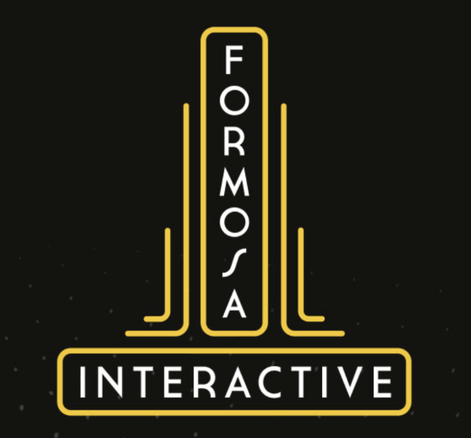

Meet the Developers
| The Developing Studio | What they do | Compliments from the main Developers | Company Logo |
|---|---|---|---|
| The Indie Stone | The core initial development team. They started the project to create the ideal zombie survival game | They are a group of close friends. Plus, they are the main developers. | |
| General Arcade | A group of coders where no coding challenge is too great for them to solve. | They have been working with The Indie Stone for several years. They are great to hang around with. | |
| Formosa Interactive UK | Formerly known as Noiseworks, this team is in charge of the sound developemnt for Project Zomboid. They completely reinvented the sound design of Knox County for Build 41. | "They are universally, charming and handsome." - The Indie Stone |  |
| Tea | A team banded together by game developing renegades who gave life to the animation system. They also helped optimize multiplayer. They are also a part of Bitbaboon, who has helped further optimize the game and general business. | They are very helpful and clever in what they do. |
Each of these studios made a serious effort in creating the ideal zombie survival game that thousands of people love to play. I wish that I could meet each of them to thank them personally because this game actually increased my connection with the friends that I play with. One of these days if I ever get offered a job from The Indie Stone, I would gladly take it as I would also like to help improve or add to the already god-tier zombie game.